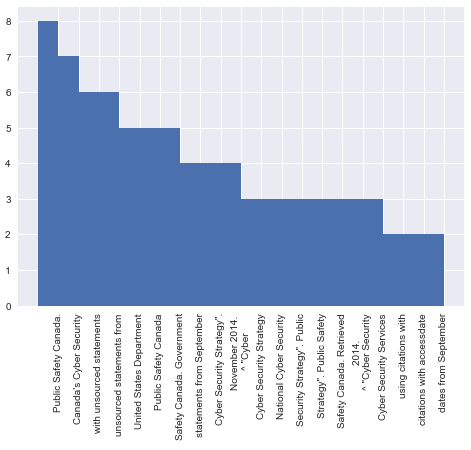
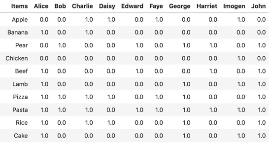

7: Text Analytics#
As a primary form of communication, the written (or spoken) word provides a massive wealth of information for many applications. For the most part we have been dealing with numerical data so far. Yet, there are plenty of applications where we would want to examine text rather than numerical data – for example, email analysis, social media analysis, product reviews, legalese, document classification, and many more. Natural Language Processing (NLP) is a subject area in it’s own right – but for now, we will introduce the topic and explore some of the methods that could be used to for security analysis.
What kind of “processing” may we want to achieve? We may want natural language generation (e.g., creating a chat bot that can respond to user questions), topic modelling (e.g., classification of document types), sentiment analysis (e.g., understanding emotional traits), text clustering (e.g., relationship between words), named entity recognition (e.g., what are the ‘things’ mentioned in a sentence – such as the blue car drove down the road). We may also want to identify key words of interest from a large text corpus, we can use a method known as term frequency-inverse document frequency which we will discuss shortly.
How does text analytics relate to security needs? We may want to examine user emotion through their use of language – common in psychological assessment such as insider threat detection. We may want to classify conversations or news articles – especially given the wealth of text information online, and how rapidly new content appears through social media sites and the like. We may also want to authenticate users based on their language, or observe when language may change – this could be in part of identifying if information is genuine, or if an attempt is made to falsify information from a given source. The rise of “fake news” on social media makes this an important security issue related to how we trust and scrutinise online materials. As alluded to earlier, humans are excellent at understanding language, however computers are not. Therefore, we need to establish models that operate in similar ways to how we understand and interpret language – recognising that these will be limited in their performance but that they are much more scalable than human resource – leaving humans to then verify the outcomes of the models.
Word Occurrences#
A simple approach to begin with would be to examine the occurrence (or count) of each unique word within a document. This example takes the Computer Security wikipedia article, and assesses the number of times each word appears on the page to develop a topic model. As we may expect, “security” is the most used word in the article – however we can learn some other useful information from this, such as “cyber”, “information” “network”, and “systems” also occurring frequently. This essentially allows us to build a dictionary of related terms that could be used to connect topics together. This concept is often referred to as a ‘bag of words’ model.

We can use this same approach to assess how frequently a given word (or set of words) occur within some text (or a set of documents). Whilst this sounds fairly simple, it is very effective. It is essentially how password brute forcing works – take the rockyou dataset of 14 million passwords, and scan a set of webpages to see if these dictionary terms occur, and you could potentially identify websites that are based on weak credentials. This opens up a range of possibilities in the scope of open-source intelligence (OSINT) – how to gather and analyse information that is openly available online. Other uses may explore dictionaries such as the Linguistic Inquiry Word Count (LIWC) that is popular in psychology and can be used to identify positive and negative sentiment, along with other linguistic features.
Another simple yet powerful extension to search for word occurrences, is searching for word pairs (or triples, etc.). We call these n-grams, where n is the number of words occurring together. Here, we now start to uncover much more context about the words, given that we can see what typically comes before or after the words of interest.


Term Frequency – Inverse Document Frequency#
TF-IDF is a powerful technique to identify word of interest based on their occurrence, whilst also not being hindered by commonly-occurring words that may not necessarily be of interest. Suppose we have a set of documents. For a single document, we may be interested in how often a particular word is mentioned. However, if this word is truly of importance to that specific document, then the expectation is that it should not be so frequent across other documents. For example, if we had documents reporting common vulnerabilities (e.g., CVEs), then a specific vulnerability such as Heartbleed may be highly mentioned in its respective document, but not mentioned in any others. This would mean that it should score higher than a word such as “cyber”, which whilst it may occur more frequently in the same document, may also occur quite frequently across all documents.
TF-IDF is calculated as follows:
TF(t) = number of times t appears in a document / total number of terms in document
IDF(t) = log (total number of documents / number of documents with t in)
Let’s consider our example using the words “Heartbleed” and “Cyber”. Suppose “Heartbleed” occurs 10 times within a 100 word document: TF(Heartbleed) = 10/100 = 0.1. Suppose we have 1000 documents and “Heartbleed” occurs in 10 of these: IDF(Heartbleed) = log(1000 / 10) = 2. Then, TF-IDF = TF * IDF = 0.1 * 2 = 0.2. Suppose now we look at the word “Cyber”, and assume it occurs 30 times within the 100 word document: TF(Cyber) = 30/100 = 0.3, but it also occurs in 750 of the 1000 documents: IDF(Heartbleed) = log(1000 / 750) = 0.124. Then, TF-IDF = TF * IDF = 0.3 * 0.124 = 0.0372. Here, Heartbleed is scored higher than Cyber because in relation to the overall document set it is deemed of greater significance.
Recommender Systems#
How can a system learn to make recommendations? Recommender systems become popular through their use in market basket analysis (e.g. Tesco Clubcard) for predicting shopping habits and recommending products that would likely result in a purchase, however they can be used in other applications to identify groupings of similarity and relations between items (e.g., words).
Suppose we have 10 popular items, and we have a record of 10 users as to whether they would buy that item or not (denoted by either a 1 or a 0). We can use this information to identify items that are purchased together, or customers who are similar in their purchasing habits. If we have a new customer, we can initiate a “cold” profile simply by taking the average of all existing users. If we learn that this new user then likes chicken, we can update our recommendations by filtering, so that we average all users who also like chicken, to obtain a revised prediction for this user. In this example, if Kyle was a new customer there would be 90% probability of him buying pasta (since 9 out of 10 of existing customers do already) and 50% probability of him buying a pear (since 5 out of 10 existing customers do already). If we then observe that Kyle buys beef (i.e., he adds it to his basket), we can filter our dataset based on customers who also buy beef. This would then indicate a 100% probability of him also buying pasta (all customers who have bought beef have also bought pasta), and a 75% probability of buying a pear (since 3 of 4 customers who bought beef also bought a pear). Likewise, the probability of Kyle buying an apple goes from 40% to 0% because of him buying beef. There is a practical notebook available where you can explore this concept further.

Now instead of this example being about items in a shopping basket, what if this was about words in a news article? We could learn to characterise topics such as ‘sports’, ‘politics’, ‘entertainment’, and ‘travel’, and we could identify articles that appear similar to each other – essentially allowing us to cluster data much like we have done earlier in this course. In a similar manner, we could also recommend the next word in a passage of text – much like how predictive text services function. Text models therefore can be used to both predict what will appear next, and also as a means of validate what has appeared next, and whether this conforms to the expected model of behaviour.
Spam Detection#
Another popular task for text analytics is identifying whether an email is spam or not. As the use of email has exploded, so has the volume of spam email received – however many providers have developed good models for detecting between genuine email and spam. How do they work? Many systems use an approach known as Naïve Bayes, based on Bayes’ Theorem: P(spam | X) = P(X | spam) * P(spam) / P(X).
This equation denotes conditional probabilities, and can essentially be described as the following:
P(spam | X): What is the probability of this email being spam, given that it contains the word X?
P(X | spam): What is the probability of the word X occurring, given that this email is spam?
P(spam): What is the probability of this email being spam?
P(X): What is the probability of the word X occurring?
Even with incomplete data, we can begin to populate values for this equation based on observations we have seen in our data (i.e., in the email set we already have). Over time, our probabilities can be updated so that our spam detection improves as new data is observed (essentially by clicking the ‘junk’ option to inform the system of undetected cases). This is a powerful technique using Bayes’ – we can not possibly have a model for all types of spam email as there are infinite permutations of spam – however conditional probability allows us to estimate this efficiently. An example of using Naïve Bayes for spam detection is available here.
More on Text Analytics#
As mentioned at the beginning of this section, there is a wealth of ongoing research and development in the area of text analytics that is increasingly useful for examining online materials and informing decisions about data (e.g., social media posts, fake news, etc.). Recurrent Neural Networks (RNN) are a special neural net architecture that work particularly well on text as they are designed for sequential data. We can consider text to be sequential as there is a specific order to words to make up a structured and meaningful sentence (e.g., “The cat sat on the…” – a RNN would likely predict the next word to be “mat”). In particular, Long Short-Term Memory (LSTM) networks are form of RNN that are widely used, which overcome some of the early limitations in RNNs for how historical information is maintained over time. The main distinction between these methods compared to traditional neural networks, is that RNN and LSTM take a sequence as an input (e.g., a set of features with some inherent order, such as a time-series), rather than a single observation of data (e.g., a set of features, or a single image)
We have shown methods that rely on feature representation, such as “one-hot encoding” of words to numerical vectors – essentially converting a list of words to a vector of zero, where a one then represents the specific word. Whilst this can work in some cases, it can be constrained when a large word list is required (e.g., the complete English language). Other language models exist, for example, Word2Vec has become adopted as a popular method for word embeddings. This essentially provides a model that can convert a given word to a vector representation in a more compact representation (e.g., an embedding) compared to “one-hot encoding”. This is similar in concept to PCA – it provides a dimensionality reduction on the data to present a meaningful yet compact representation. Word2Vec can be used to define a ‘continuous bag of words’, where given a set of words, what one word would fit within the set. Similarly, it can also be used to define ‘skip-grams’, where given a single word, what set of words would fit with this? We can see that these two methods are the inverse of each other. Extensions to the Word2Vec model have been proposed such as Doc2Vec, which generates vectors to summary complete documents based on the Word2Vec model, offering a model compact representation for larger document analysis task.
In recent years there has been a great interest in language models, and developing automated models for tasks such as chatbots and image captioning. If we consider a single word as a vector, a “simple” model could be considered as a vec2vec model (e.g., word translation). In our earlier example, we may have a sequence of words that then predict a single output word (e.g. predictive text), which we could consider as seq2vec. By extension, we then may also be interested in models that adopt vec2seq (a single input mapping to a sequential output) and seq2seq (a sequential input mapping to a sequential output). Language translation could be considered as seq2seq since we may have a variable length input and a variable length output. Another good example would be for a conversational agent (e.g., a chatbot), since the length of the input (i.e., number of words in the question) may vary in length each time, and likewise the length of the output (i.e., the answer given by the system) may also be a variable length. Text analytics and language models are perhaps the most groundbreaking area of research in delivering artificial intelligence. Generative Pre-trained Transformer 3 (GPT-3) was released in 2020 by OpenAI in their research paper “Language Models are Few-Shot Learners”. It uses 175 billion parameters in their learning model, but achieves near-human accuracy. Whilst it can do traditional text tasks like sentence completion, they demonstrate it’s effectiveness for truly understanding text, such as executing commands as described by a human – from building applications based on a written description, smart assistants that can recognise tasks and provide recommendation, and many other examples that are available online. There are two videos in particular that describe just some of the possible applications by 2 minute papers and by Half Ideas. With the Internet serving to inform a model, and compute power ever-increasing, there is a great wealth of potential to be explored here.